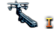

Submarine Engine

A engine that is used to power submarines both on the surface and below it.
- Submarine Engine I:
- +10% max speed
- 7 fuel usage
- Submarine Engine II:
- +10% max speed
- 8 fuel usage
- Submarine Engine III:
- +15% max speed
- 10 fuel usage
- Submarine Engine IV:
- +20% max speed
- 10 fuel usage
Torpedo Tubes

Torpedo tubes inside a submarine that are specialy desgined to be used underwater.
- Torpedo Tubes I:
- 14 Torpedo Attack
- -1% max speed
- Torpedo Tubes II:
- 18 Torpedo Attack
- +1% Torpedo Hit Chance
- -2% max speed
- Torpedo Tubes III:
- 22 Torpedo Attack
- +1.5% Torpedo Hit Chance
- -3% max speed
- Torpedo Tubes IV:
- 28 Torpedo Attack
- +2% Torpedo Hit Chance
- -4% max speed
Snorkel

Snorkel allows the submarine to charge its batteries while underwater by allowing airflow while the submarine
is submerged.
- Basic Schnorkel
- -7% sub visibility
- Improved Schnorkel
- -13% sub visibility
Radar

Electronics used to detect objects from a long distance.
- Radar I
- 5 surface detection
- Radar II
- 7 surface detection
- 2 sub detection
- +2.5% light battery hit chance
- +2.5% heavy battery hit chance
- +5% anti-air
- Radar III
- 12 surface detection
- 6 sub detection
- +5% light battery hit chance
- +5% heavy battery hit chance
- +7.5% anti-air
- Radar IV
- 18 surface detection
- 14 sub detection
- +10% light battery hit chance
- +10% heavy battery hit chance
- +10% anti-air
Minelaying Tubes
Equipment meant for submarines to deploy sea mines safely.
Floatplane Catapult

Catapult meant to shoot floatplanes into the air.
- Floatplane Catapult
- 7 Surface Detection
- 2.5 Sub Detection
- -1% max speed
- Improved Floatplane Catapult
- 10 Surface Detection
- 3.5 Sub Detection
- -1% max speed